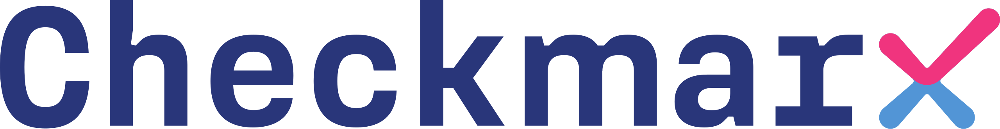
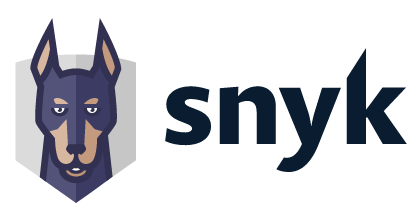
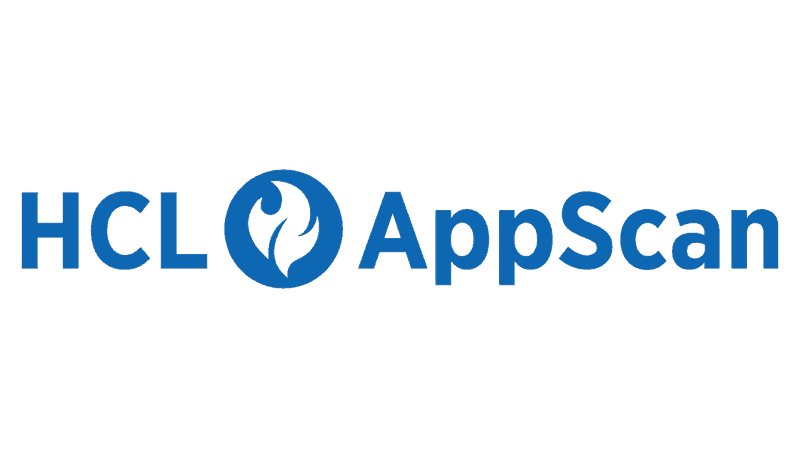
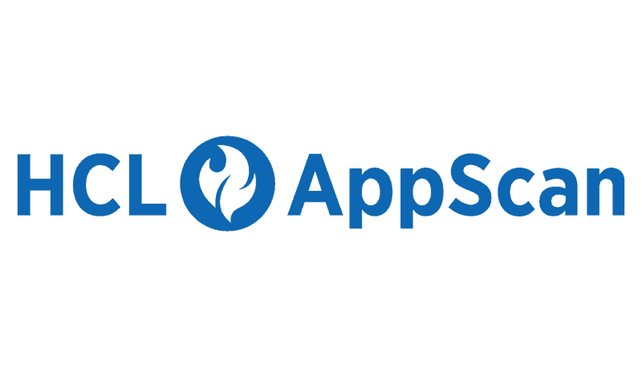
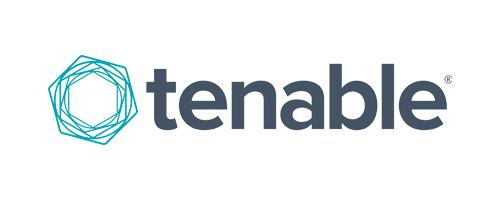
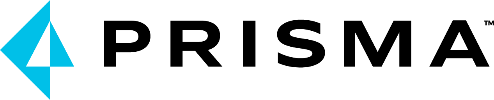
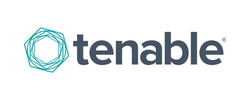
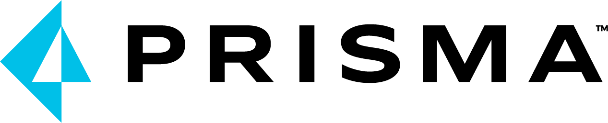

Toolstack


 


 





I am an Application Security Engineer with experience supporting organizations in building and operating secure application development practices. My work focuses on integrating application security into the SDLC through SAST, DAST, and secure development workflows, from initial evaluations and deployments to ongoing operational support.
I have led and supported application security implementations, conducted source code reviews, and worked closely with development teams to identify, prioritize, and remediate security issues in a practical and scalable manner. I also contribute to the adoption of application security workflows, including vulnerability tracking, prioritization, and security approval processes, ensuring security requirements align with development and delivery goals.
In addition, I support development and security teams through technical walkthroughs, demonstrations, and focused knowledge-sharing sessions, helping them effectively apply application security practices in real-world development environments. Alongside my core application security focus, I have foundational exposure to vulnerability management, IAM, and cloud security, which complements my work in modern application ecosystems.
SAST, DAST, SCA, API Security, Manual Testing, Threat Analysis.
Secure CI/CD, Checkmarx, Jenkins, GitHub Actions, AzureDevops, Pipeline Hardening.
AWS Basics, Linux Administration, Docker, Container Security.
Python, Shell Scripting,
JavaScript, HTML.
Tenable IO, Tenable SC,
Nessus
Tenalble Identity Exposure,
Saviynt
Certified Ethical Hacker by EC-Council. Covers ethical hacking phases, attack vectors, and prevention.

Microsoft Azure Fundamentals covering cloud concepts, architecture, security, and governance.
The EC-Council Ethical Hacking Essentials (EHE) is a beginner-friendly, self-paced course that teaches the fundamentals of ethical hacking and information security.

Checkmarx Certified Partner Engineer | Checkmarx Certified Partner Professional Services Engineer

Tenable Certified Sales Engineer | Tenable Certified Sales Associate

Snyk Certified Technical professional | Snyk Certified Implementation Professional
Saviynt Certified Identity Security For AI Age | Saviynt PAM Level 100
Performed manual testing using Burp Suite, identified vulnerabilities, and provided remediation steps.
Integrated SAST, DAST, and SCA tools into CI/CD workflows to automate security testing.
Developed Python, bash scripts to fetch, analyze, and automate security reports.